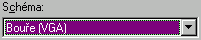
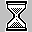
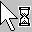

Popis obrazovky
- Pozadie
- pozadie je ako papier na pracovnom stole, má len estetickú úlohu.
Pozadie mô�e by� jednofarebné, Ve¾ké obrázky však oberajú o systémové zdroje.
- Ikony
- Na ploche mo�no nájs� ikony nasledovnıch typov:
- systémové - sú na ploche hneï po inštalácii a obyèajne nie je dôvod na ich odstránenie. Napr. "Tento poèítaè", "Kôš"
- aplikácie - spustitelné programy, nemali by by� na ploche. Ak chceme spúš�a� aplikáciu z plochy, vytvoríme na ploche
zástupcu.
- dokumenty - poznáme pod¾a toho, �e majú zahnutı pravı hornı ro�ok. Ide o dátové súbory aplikácii a podobne ako aplikácie
by nemali le�a� na ploche. Na dokumenty je urèenı adresár "Dokumenty", ale mô�e to by� riešenie pre zábudlivıch aby
mohli po zapnutí poèítaèa hneï pokraèova� v rozrobenej práci z minulého dòa.
- zástupcovia - niekedy tie� nazıvané linky alebo odkazy. Poznáme ich pod¾a zahnutej šipky v¾avo dole. Zástupca mô�e
by� vytvorenı ku aplikáciám, dokumentom i prieèinkom (adresárom)
- Povinné ikony
- Väèšina ikon na ploche je volitelná - ak ich nepotrebujeme mô�eme ich odstráni�, no existujú ikony, ktoré sú povinné
a ktoré by sme odstraòova� nemali.
- Tento poèítaè - je to cesta ako sa dosta� ku obsahu diskovıch, disketovıch a CD jednotiek.
- Tento poèítaè - Okolné poèítaèe - toto je cesta ku miestam v sieti (diskom, disketám, tlaèiaròam)
- Kôš - miesto, kde sú vymazané súbory. Tieto súbory mo�no obnovi� alebo definitívne vymaza�.
- Okná
- Na ploche mo�u by� okná spustenıch aplikácií alebo dialógovıch okien. Len jedno okno mô�e by� aktívne, obyèajne ho
poznáme pod¾a toho, �e vrchnı pruh je modrej farby. Vstup s klávesnice je automaticky nasmerovanı do aktívneho okna, kde
mô�e by� spracovanı. Kliknutím na neaktívne okno sa toto stane aktívne.
- Hlavnı panel
- Obyèajne šedı pruh umiestnenı naspodu obrazovky, ale je premiestnite¾nı aj na inı kraj obrazovky.
Stavba hlavného panelu:
- Tlaèítko "Štart"
- "¼ahké spustenie" -panel nástrojov, kde mô�eme umiestni� malú skupinu aplikácií, kde najzaujímavejšia je ikona "Zobraz plochu"
- Minimalizované okná be�iacich aplikácií
- Ikony rezidentnıch aplikácií. Najznámejšie sú:
- plánovaè úloh
- prepínaè klávesnice
- prepínaè grafického re�imu
- antivírovı rezident
- hodiny
Hlavnı panel
- Hlavnı panel
- Hlavnı panel je lišta obyèajne naspodu obrazovky s jednım tlaèítkom "Štart". Okrem tlaèítka Štart je na hlavnom paneli oblas�
pre ikony minimalizovnıch aplikácií a vpravo bıva oblas� spustenıch rezidentnıch programov (plánovaè úloh, obsluha klávesnice,
obsluha rozlíšenia obrazovky, antivírovı program a mo�no sem umiestni� aj hodiny)
- Vlastnosti
- Vlastnosti hlavného panelu mo�no nastavi� cez tlaèítko "Štart" vo¾bu "Nastavenie" -> "Hlavnı panel", alebo kliknutím
pravého tlaèítka na myši na hlavnı panel.
- V�dy navrchu - Zabezpeèí, �e hlavnı panel bude v�dy navrch a nedá sa zakry� oknom
- Automaticky schováva� - pri odchode z hlavného panela sa hlavnı panel zú�i na úzky pásik
- Malé ikony v ponuke Štart - Zmenší ponuku štart
- Zobrazova� hodiny - vpravo na hlavnom paneli mo�no zobrazova� reálny èas
- Premiestòovanie
- Hlavnı panel mo�no �ahaním zväèšova� (èo ve¾kı prínos nie je) a tie� ho �ahaním mo�no presunú� na inı okraj obrazovky.
Popis okien
Poznáme dva druhy okien, ktoré sa líšia svojou funkciou i vzh¾adom.
- dialógové
- Pomocou dialógového okna mo�no nastavova� vlastnosti. Dialógové okno si mô�e zavola� systém
na nastavenie vlastností systému ako napr. grafické rozlíšenie, nastavenie hlasitosti a pod.
a tie� si ho mô�e zavola� aplikácia na nastavenie nejakıch parametrov, vo¾bu tlaèiarne, písma a pod..
- Vzh¾ad
- Dialógové okno ¾ahko poznáme pod¾a titulnej lišty-pruhu, na ktorom vpravo sú len dve
tlaèítka a to , ktorım
mo�no zavola� help a tlaèítko ,
ktorım mo�no okno zavrie�.
Oproti aplikaènım oknám dialógové má
- - inú titulnú lištu (iné tlaèítka na nej)
- - nedoká�e meni� svoju ve¾kos�
- - nemo�no ho minimalizova�
- - neobsahuje menu
- Obsah
- dialógové okno okno mô�e obsahova� ve¾ké mno�stvo rôznych objektov a tú sú aspoò najèastejšie sa vyskytujúce:
- zálo�ky-karty ... ka�dá karta má viditelné uško cez ktoré sa mô�e zaktívni� a dosta�
sa v zozname kariet navrch.
- zoznamy ... ohranièená (biela) oblas� s riadkami. Pou�íva sa na vıber 1 z N pri
menšom poète ponúkanıch mo�ností
- rozba¾ujúci zoznam ... zobrazenı ako jeden riadok s 
s malou šipkou vpravo a s vysvet¾ujúcim textok nad riadkom. Vıhoda oproti zoznamu je menšia
obsadená plocha v okne.
- prepínaèe - radiobutton ... na rıchlu vo¾bu 1 z N mo�ností. Len jedna vo¾ba mô�e by� aktívna.
- zaškrtávacie políèka - checkbutton ... aktivovanie/deaktivovanie nejakej vlastnosti
- tlaèítka - buttons ... s nimi mo�no vyvola� ¾ubovolnú akciu. Väèšina dialógovıch okien
má minimálne tlaèítka OK, STORNO, POU�ÍT.
- posuvnı be�ec ... pou�íva sa na volbu èíselnej hodnoty (napr. hlasitos�)
- Up-Down ... šipky na zväèšovanie/zmenšovanie èísla o 1
- vstupné riadky ... napr. pri volbe súboru
- obrázkové prvky ... len dotvárací efekt (napr. obrázok monitora)
- aplikaèné okno
- Titulná lišta
- Bıva na òom názov aplikácie, celé okno sa dá zaò uchopi� a posúva� po ploche, ak naò 2-krát klikneme
mo�no okno maximalizova�/nastavi� implicitnú ve¾kos�. Vpravo sú na lište 3 tlaèítka
"minimalizácia", "maximalizácia/imlicitná velkost","zavretie".
- Hlavné menu
- Väèšina aplikaènıch okien má roletové menu, pomocou ktorého spúš�ame po�adované akcie.
- Panel nástrojov
- Pre èasto sa vyskytujúce operácie bıva k dispozícii panel s malımi ikonami, za ka�dou ikonou
je skrytá urèitá akcia akcia ktorá sa aktivuje kliknutím na ikonu. Typické sú ikony na
otvorenie súboru, zápis, kopírovanie do schránky a pod.
- Stavovı riadok
- Tie� väèšina okien má naspodu okna stavovı riadok, kde je mo�né vypisova� aká akcia sa
sa práve robí, stav kláves (prepis<->vkladanie), poloha kurzora (èíslo riadku, strany).
Tie� tu mô�e by� aktuálna nápoveda.
- Jedno resp. viac podriadenıch okien.
- Tieto okná sú podriadené, èo znamená, �e nemô�u vybehnú� z nadriadeného okna aplikácie von.
(napr. ak vo worde otvorím viac súborov, tak hıba� s oknom súboru mo�no len v rámci wordu.
- Posuvné pruhy
- zvislı a vodorovnı. Ak podriadené okno svojou ve¾kos�ou prevyšuje priestor urèenı aplikaènım
oknom ku oknu pribudnú posuvné pruhy pomocou ktorıch mo�no podokno rolova�. Podobne sa pruhy
mô�u ukáza� aj pri hlavnom okne.
- Okraje okna
- Aplikaèné okno bıva orámované dvojitım rámikom, ktorı je "chytatelnı", jeho uchopením
mo�no meni� ve¾kos� aplikaèného okna.
- Práce s myšou
- Myš je najviac vyu�ívanı nástroj pre prácu s win, a preto je dobré vedie� èo ktorı myší kurzor
signalizuje
 | normálny vıber
|  | zaneprázdnenı
|
| presnı vıber
| | pomoc
|
| presun
| | sem sa nedá polo�i�
|
| zmena ve¾kosti
|  | èakaj
|